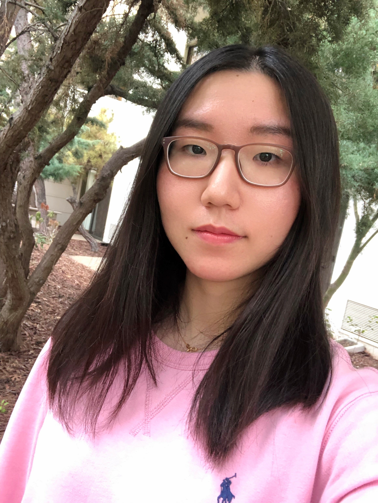
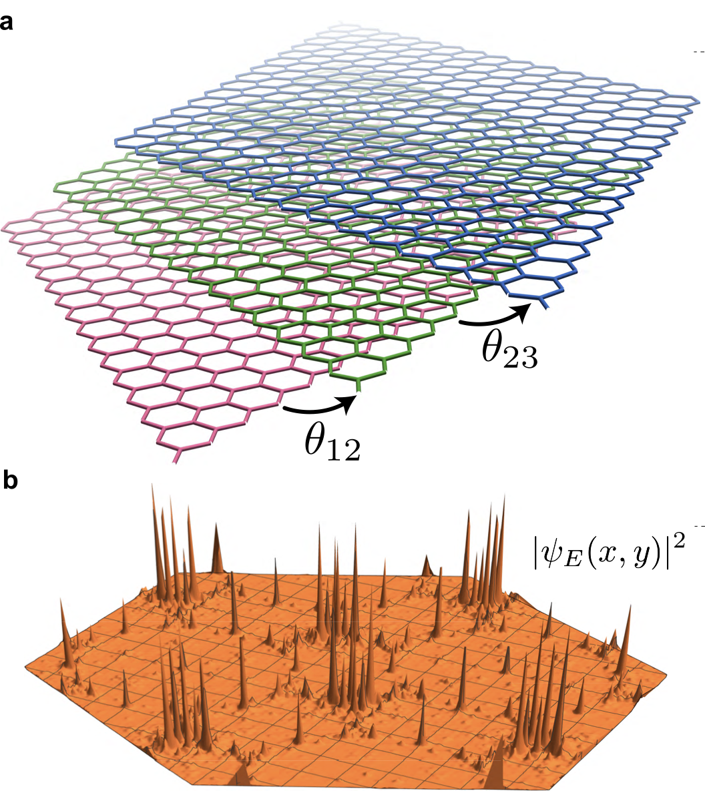
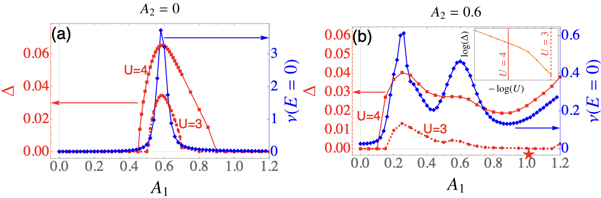
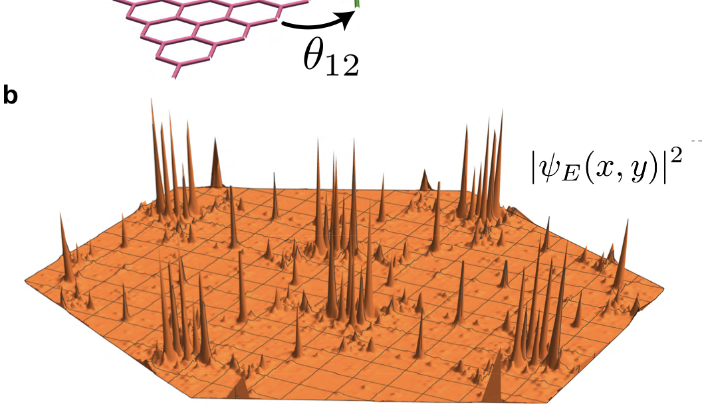
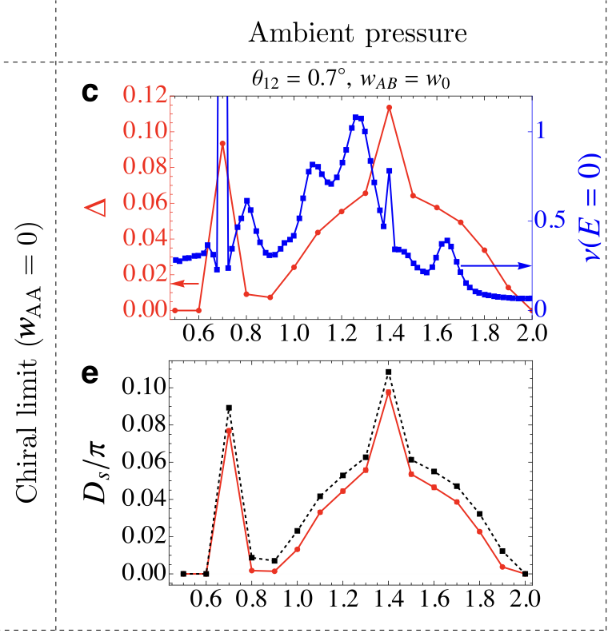
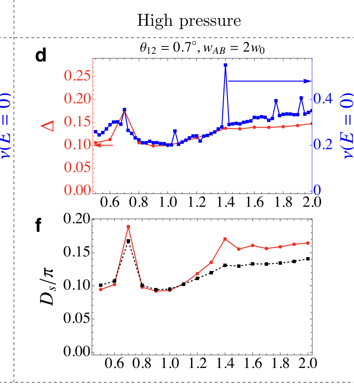
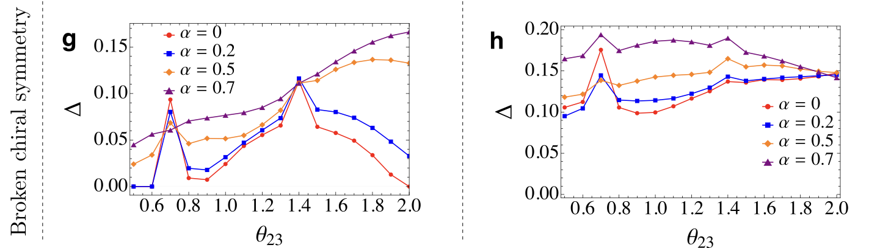
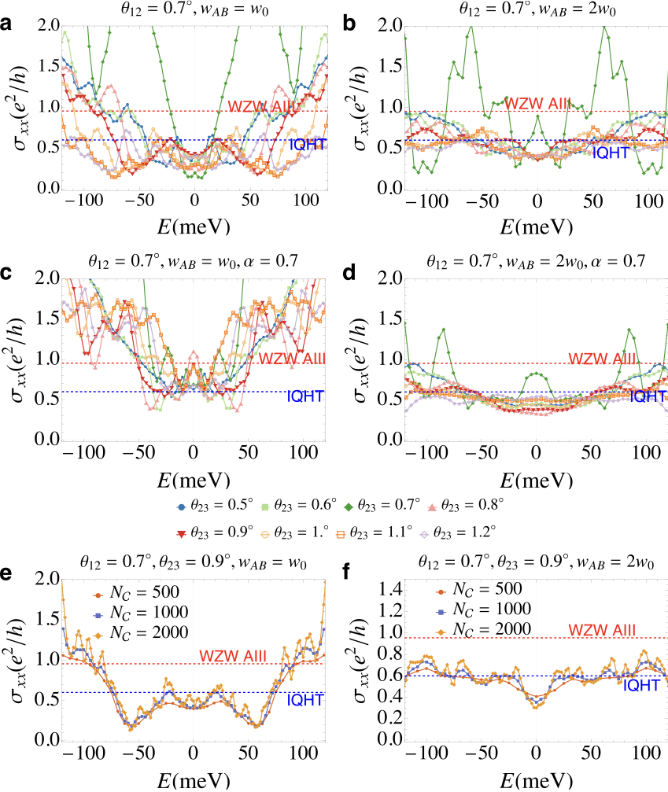
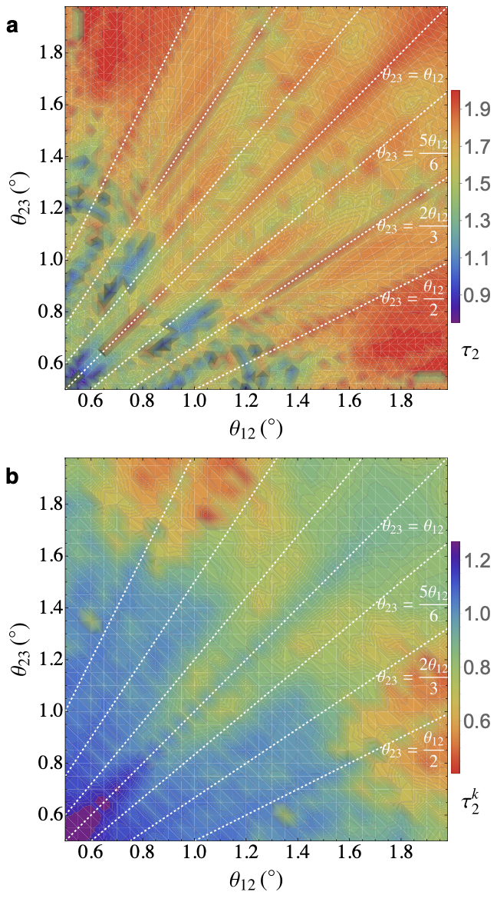

Twisted Trilayer Graphene,
Quasiperiodic Superconductor
arXiv:2512.22340
Collaborators

Builds on our previous work on quasiperiodic twisted bilayer graphene:
Zhang, JHW, Foster — PRB 111, 024207 (2025)
Twisted trilayer graphene is quasiperiodic
Three graphene layers with two independent twist angles \(\theta_{12}\) and \(\theta_{23}\) produce interfering moiré patterns.
Generically quasiperiodic — no translational symmetry on the moiré scale.
Yet experiments observe superconductivity in TTG:
- Uri et al., Nature 620, 762 (2023)
- Xia et al., arXiv:2509.03583 (2025)
- Hoke et al., arXiv:2509.07977 (2025)
when the wavefunctions are this inhomogeneous?

(a) Helical TTG. (b) Multifractal \(|\psi|^2\).
Previous work & the key insight
Quasiperiodic TBG
In quasiperiodic twisted bilayer graphene, we showed that critical filaments of multifractal wavefunctions thread through parameter space and enhance superconducting pairing. The key: in the chiral limit, the Dirac fermions simulate the surface of a 3D class-CI topological superconductor.
Zhang, JHW, Foster — PRB 111, 024207 (2025)
Magic-angle semimetals
Band nodes + incommensurate potentials generate eigenstate criticality — flat bands and multifractal wavefunctions at magic couplings.
Fu, König, JHW, Chou, Pixley — npj QM 5, 71 (2020)
TTG: a simulator of class AIII
The additional moiré pattern in TTG changes the symmetry class to AIII via non-Abelian gauge potentials, with criticality of the integer quantum Hall plateau transition at finite energies.

\(\Delta\) and DOS in quasiperiodic TBG. (a) Periodic: SC at magic angle only. (b) Quasiperiodic: SC enhanced broadly.
The effective topology prevents Anderson localization → spectrum-wide quantum criticality
Multifractality enhances superconductivity
At the Anderson transition
At the Anderson transition, wavefunctions are multifractal: their spiky, self-similar density profiles enhance Cooper pairing by increasing effective interaction matrix elements.
Feigel'man et al., PRL 98, 027001 (2007); Zhang & Foster, PRB 106, L180503 (2022)
In TTG: an extended critical phase

\(|\psi_E(x,y)|^2\) in quasiperiodic TTG. Self-similar spatial structure.
In TTG, the effective topology drives this from a property of a phase transition into a spectrum-wide multifractal phase: all normal-state wavefunctions are critical (for small twist angles $\theta_{12}+\theta_{23}\approx 1.5^\circ$), not just those at isolated energies.
Pairing channel: we study intervalley \(s\)-wave as the simplest conventional scenario. The critical normal state is a single-particle effect, independent of pairing symmetry. Exotic nodal pairing remains an open direction.
Robust superconductivity across twist angles
In the chiral limit (\(\alpha=0\), \(w_\text{AB}=110\) meV):
- SC order parameter \(\Delta\) is finite across a broad range of \(\theta_{23}\), not just at commensurate (magic) angles
- DOS and \(\Delta\) do not track each other — SC is not simply flat-band physics
The quasiperiodicity does not degrade phase coherence. The topology pins the normal-state conductivity to \(\sigma_n = 3e^2/\pi h\), so the stiffness suppression you would normally get from spatial inhomogeneity never kicks in.
Trivedi, Scalettar, Randeria, PRB 54, R3756 (1996)

(c) \(\Delta\) and DOS \(\nu(0)\) vs. \(\theta_{23}\)
(e) Superfluid stiffness \(D_s/\pi\); dashed: ideal Dirac
Prediction: Pressure enhances SC


(d,f) Chiral, \(w_\text{AB}=2w_0\): \(\Delta\) uniform.
(g,h) Broken chiral: SC enhanced.
Doubling interlayer coupling (\(w_\text{AB}\!=\!2w_0\!=\!220\) meV, achievable with hydrostatic pressure):
- \(\Delta\) becomes uniform across twist angles — no fine-tuning needed
- Stiffness follows ideal Dirac: \(D_s/\pi \approx 3\Delta/\pi\)
- With broken chiral symmetry (\(\alpha\!=\!0.7\)), SC is further enhanced at incommensurate angles
Applying pressure to TTG should strengthen superconductivity and make it observable across a wider range of twist angles.
Accessible pressures: Carr et al. PRB 98 (2018); Yankowitz et al. Science 363 (2019)
Conductivity: fingerprint of criticality
The Kubo conductivity of the normal state makes the criticality visible:
- At incommensurate angles, \(\sigma_{xx}\) locks to the IQHT critical value \(\approx 0.6\, e^2/h\) across a wide energy window
- Spectrum-wide quantum criticality: not just at isolated energies (unlike the usual quantum Hall effect)
- At doubled coupling (\(w_\text{AB}\!=\!2w_0\)), criticality is stabilized even with broken chiral symmetry
KPM convergence distinguishes the regimes: critical states plateau with increasing polynomial order \(N_\mathcal{C}\), while ballistic states grow without saturating.
Seemingly counterintuitive: pressure reduces normal-state conductivity (more critical) while enhancing SC. But critical wavefunctions are known to boost Cooper pairing — what’s unique here is that the topology also gives you rigid stiffness.

Normal-state \(\sigma_{xx}\) vs energy for various \(\theta_{23}\). Red/blue dashed: WZW and IQHT critical values. (e,f) KPM convergence at incommensurate angle.
Universal across models

(a) Real-space \(\tau_2\), collinear. (b) Momentum-space \(\tau_2^k\), non-collinear.
We use a collinear model: moiré reciprocal vectors aligned in direction, differing only in magnitude — this lets us reach much larger system sizes. The non-collinear model keeps the full directional mismatch but is more expensive computationally.
Non-collinear: Zhu, Carr, Massatt, Luskin, Kaxiras — PRL 125, 116404 (2020)
The IPR \(P_2 \sim L^{-\tau_2}\) maps out the critical phase. The collinear model gives real-space \(\tau_2\) (small = critical); the non-collinear gives momentum-space \(\tau_2^k\) (large = critical). The trends are inverted, but they identify the same critical and ballistic regions in twist-angle space.
- Both: broad triangular region of criticality away from commensurate lines where \(\tau_2 \approx 2\) (extended)
- The critical region is exactly where \(\sigma_{xx}\) locks to the IQHT value
The experimental test: if you measure \(\sigma_{xx} \sim 0.6\,e^2/h\) across a range of energies, you are seeing the IQHT critical metal.
Summary & outlook
Future directions: Nodal / exotic pairing · TMD multilayers · Experimental verification via transport
Zhang, Zhu, JHW, Foster — arXiv:2512.22340
Built on: Zhang, JHW, Foster PRB 111, 024207 (2025)
Thank you!